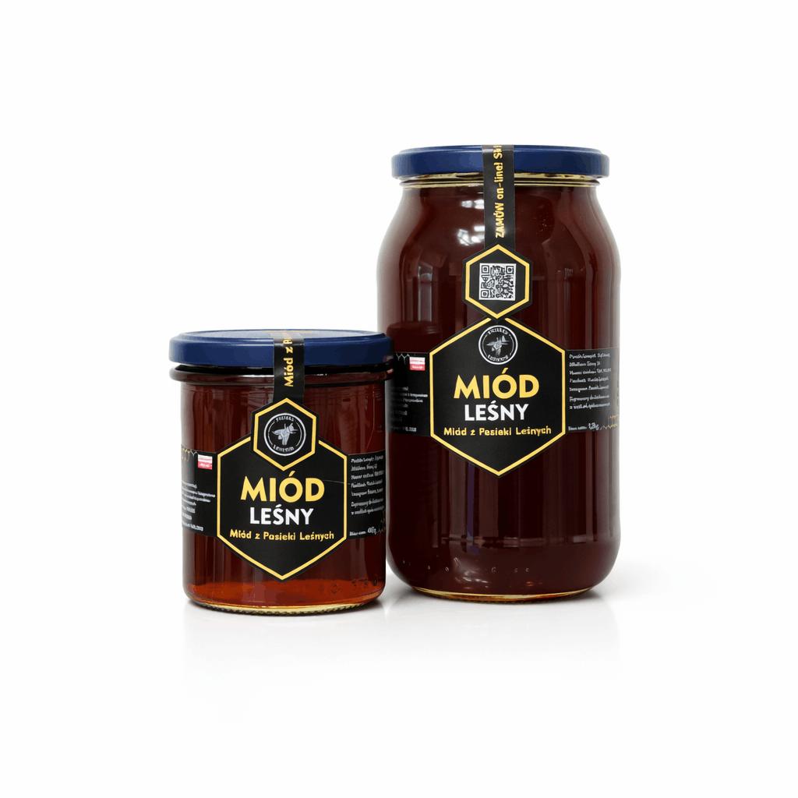

Miód do śniadania, napoju i serów
Kulinarne inspiracje na co dzień.
Czytaj artykuł →Poradnik Pasieki Leśnych o wyborze miodu, kulinarnych połączeniach i prostych pomysłach na podanie.
Przejdź do artykułówPorównaj smaki, znajdź pomysły do kuchni i dowiedz się, co przeczytać na etykiecie. Zdjęcia przedstawiają produkty Pasieki Leśnych.